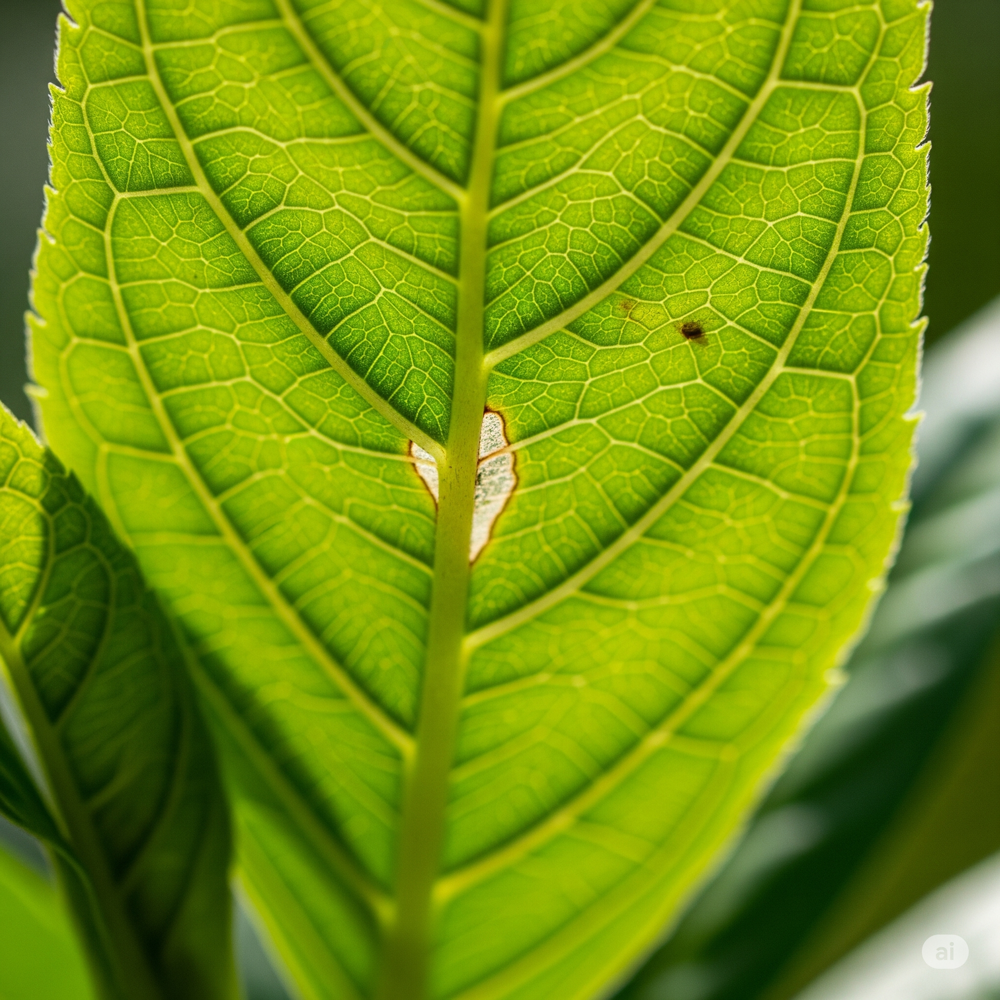

🐞 Como Identificar e Lidar com Pragas em Suas Plantas: Um Guia Prático

Mesmo com as melhores práticas de rega e iluminação, suas plantas podem ocasionalmente ser visitadas por pequenos intrusos: as pragas. A boa notícia é que, com identificação precoce e ação rápida, a maioria dos problemas pode ser resolvida sem maiores danos.
1. Sinais Gerais de Infestação: Fique de Olho!
- Folhas Amarelando ou Caindo: Especialmente se forem folhas novas ou se a queda for generalizada e rápida.
- Manchas e Descolorações Inexplicáveis: Pontos, áreas desbotadas ou descoloridas nas folhas.
- Folhas Deformadas ou Enroladas: Novo crescimento que não se desenvolve normalmente.
- Presença de "Melada": Substância pegajosa nas folhas ou no chão.
- Pó Preto (Fumagina): Fungo preto que cresce sobre a melada.
- Fios ou Teias Finas: Especialmente na parte inferior das folhas.
- Crescimento Estagnado: Planta para de crescer ou desenvolve-se lentamente.
- Pequenos Insetos Voando: Ao redor da planta ou sobre o solo.
Observando o Comportamento do Seu Gato: Um Alerta Silencioso?
Além dos sinais visuais na planta, seu amigo felino pode, de forma sutil, indicar que algo não vai bem. Gatos são observadores e sensíveis ao ambiente. Se seu gato de repente evita uma planta que antes cheirava ou explorava, ou se ele passa a farejar insistentemente uma folha específica, ou até mesmo tenta "limpar" algo em uma folha, pode ser um sinal de que ele percebeu uma alteração. Embora não seja um diagnóstico, uma mudança no interesse do seu gato por uma planta saudável pode ser um convite para você inspecioná-la mais de perto em busca dos sinais de pragas que listamos abaixo.
2. Conheça Seus Inimigos: Pragas Comuns e Como Identificá-las
Ácaros (Ácaro-aranha): Pontinhos minúsculos com teias finas. Deixam folhas amareladas e opacas.
Cochonilhas: Insetos com aparência de algodão ou conchas. Ficam em caules e axilas.
Pulgões: Pequenos, coloridos, se agrupam em brotos e folhas jovens.
Moscas-brancas: Voam quando a planta é tocada. Vivem na parte inferior das folhas.
Mosquinhos de Fungo: Pequenos mosquitos pretos no solo. Larvas podem atacar raízes.
3. Primeiros Passos para o Combate: Agindo Rápido!
- Isole a Planta: Para evitar contágio.
- Limpeza Manual: Com cotonete com álcool ou jato d’água nas folhas.
- Poda: Remova partes muito infestadas e descarte corretamente.
- Óleo de Neem: Misture com sabão e aplique em toda a planta.
- Sabão de Potássio: Pulverize com sabão neutro diluído. Enxágue depois.
4. A Melhor Defesa é a Prevenção!
- Inspecione Novas Plantas: Sempre antes de integrar ao ambiente.
- Quarentena: Mantenha novas plantas separadas por semanas.
- Limpeza Regular: Limpe folhas com pano úmido.
- Boa Circulação de Ar: Evita acúmulo de umidade.
- Plantas Saudáveis: Regadas e nutridas corretamente resistem melhor.
- Remova Folhas Mortas: Evite esconderijos para pragas.
A chave para lidar com pragas é a persistência. Continue monitorando sua planta mesmo após o tratamento. Com atenção e os cuidados certos, suas plantas estarão protegidas e prosperando!
← Voltar para o blog